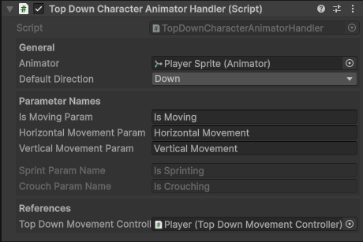

Top Down Character Animator Handler
Syncs parameters in an Animator Controller to values within the Top Down Movement Controller component.

How It Works
- Reads movement and state data from the assigned Top Down Movement Controller component.
- Updates Animator Controller paramters in-real time to reflect the character's state.
- Animator Controller uses those parameters to play specific animations.
Inspector Fields
References
| Parameter | Type | Description |
|---|---|---|
| Animator | Animator |
The Animator component used to set parameters. |
| Movement Controller | TopDownMovementController |
The Top Down Movement Controller component used to listen for movement. |
Parameter Names
| Parameter | Type | Description |
|---|---|---|
| Is Moving Param | Bool |
The Animator parameter name used to indicate whether the character is moving. Set to true when movement is detected. |
| Horizontal Movement Param | String |
The Animator parameter name for horizontal input.-1 when moving left and 1 when moving right. |
| Vertical Movement Param | String |
The Animator parameter name for vertical input.-1 when moving down and 1 when moving up. |
| Sprint Param | Bool |
The Animator parameter name used to indicate when the character is sprinting.True when sprinting, otherwise false.Only available when Sprint is enabled in the Top Down Movement Controller. |
| Crouch Param | Bool |
The Animator parameter name used to indicate when the character is crouching.True when crouched, otherwise false.Only available when Crouch is enabled in the Top Down Movement Controller. |
Public Methods
All of these methods can be called directly from any instance of the Top Down Character Animator Handler component.
ChangeDirection(FourDirectional/EightDirectional): Immediately update the direction the character is facing.PlayAnimation(string): Play a specific animation or blend tree by state name.PlayDefaultAnimation(): Play the default animation state defined in the Animator Controller.